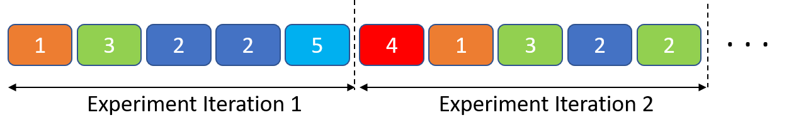
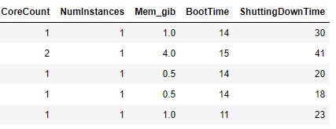
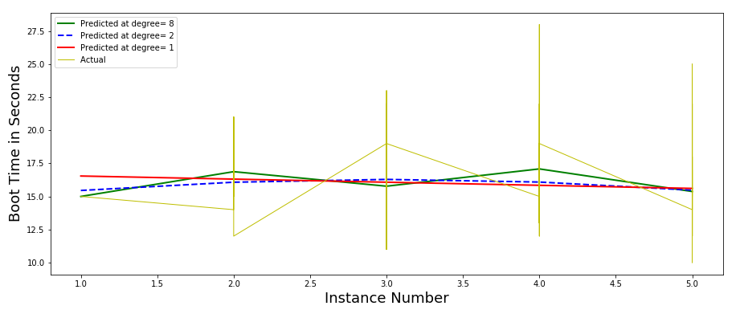

In cloud computing environments the performance measurements can vary significantly.
This may be due to being assigned different physical systems across different experiments at
different times or, the performance may be impacted due to sharing, in this case variations occur due
to other applications that are executing on the same physical hosts (e.g., affecting disk through put)
or elsewhere in the same cloud environment (possibly affecting network latencies or throughput).
When conducting a comparison of two or more competing alternatives, care must be taken to ensure that
any differences in performance are due only to the differences in alternatives and not because,
one alternative might be executing in a more favorable environment (e.g., in the absence of other
applications running on the same node or on a faster node). Therefore, here we have used Randomized
Multiple Interleaved Trials (RMIT) to record the booting and shutting down time for the VMs as suggested in this paper.
We perform this separately for different types of instances to keep the homogeneity of instances.
For every experiment iteration we randomly choose 5 numbers between 1 and 5 and start those many number of
instances and, record their booting and shutting-down time and save to database.
Then we repeat the experiment 5 more times as shown in below figure.
Here the number in boxes represent the number of instances started in that experimeny iteration.

Fig.1 - Randomized Multiple Interleaved Trials (RMIT)
Now, after collection of data we used two approaches to find the botting and shutting down time.
Average accross experiments :
Here we do the average of all the instances group (group is how many instances to start simultaneously) across experiment iterations.
For example:
If our experiment has :
2, 2 -> in Experiment Iteration 1
0, -> in Experiment iteration 2
2 -> in Experiment Iteration 3
2 -> in Experiment Iteration 4
2 -> in Experiment Iteration 5
Now for calculating the time required for 2 instances to start and shutdown simultaneously, we average the booting and shutting down time for all the pair of instances across the experiment iterations which here is 5 (2+0+1+1+1)
Regression :
In this approach we apply Polynomial regression in which the relationship between the independent variables
{ CoreCount, NumInstances, Mem_gib } and the dependent variable BootingTIme and Shutting-Down Time
is modelled as an nth degree polynomial. Below is the sample figure for the table

Fig.2 - Regression Independent and Dependent Variables
and below is the sample regression plot generated at different degrees for t2.medium. Degree 8 gave the least RMS error.

Fig.3 - Regression Plot